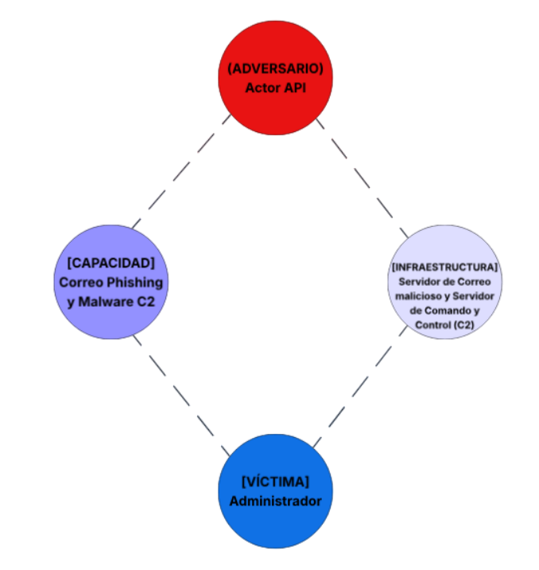
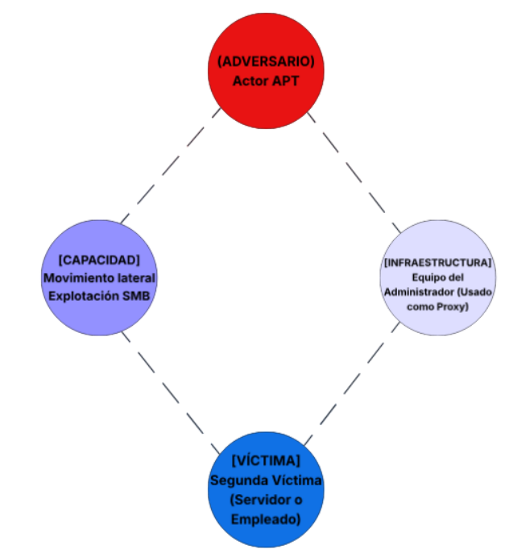
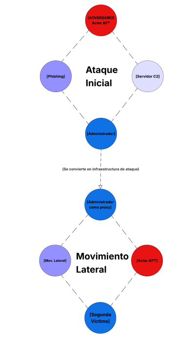

Materia: Seguridad Informática | Semestre: 8º | Nombre: América Fabiola Guerra Ramírez - 179888 | Profesor: Servando López Contreras
El Modelo del Diamante para el análisis de intrusiones es un marco formal que describe cada incidente de intrusión cibernética a través de cuatro elementos interconectados (el adversario, la capacidad, la infraestructura y la víctima) dispuestos en forma de diamante para permitir un análisis estructurado de la inteligencia sobre amenazas basado en las relaciones.
| Elemento | Descripción | Ejemplo Práctico |
|---|---|---|
| Adversario | El actor o grupo malicioso responsable de la intrusión. | Un grupo de cibercrimen con motivaciones financieras. |
| Capacidad | Herramientas, técnicas y procedimientos utilizados por el adversario. | Malware tipo ransomware o exploits. |
| Infraestructura | Recursos físicos y lógicos utilizados para comunicarse. | Servidores C2 y dominios maliciosos. |
| Víctima | Organización o activo afectado por el ataque. | Servidor financiero o endpoint administrativo. |
Escenario: Una organización detecta comportamiento anómalo en un equipo.
El análisis revela:
| Meta característica | Descripción del evento |
|---|---|
| Marca de tiempo | Fecha y hora registrada en logs de red y antivirus. |
| Fase | Command and Control (C2) y Actions on Objectives. |
| Resultado | El malware logró contactar la infraestructura del adversario. |
| Dirección | El tráfico fluye desde la red interna hacia IPs externas. |
| Metodología | Comunicación persistente entre host infectado y servidor C2. |
| Recursos | Resolución DNS y túneles de comunicación cifrada. |
Aunque la identidad real suele ser difícil de atribuir, el adversario se define por el actor o grupo de amenazas identificado mediante la geolocalización de las IPs y los datos WHOIS.
La capacidad corresponde al malware persistente detectado, incluyendo funciones de evasión y comunicación mediante beaconing.
Se utiliza infraestructura de Comando y Control (C2) mediante dominios maliciosos y direcciones IP externas.
La víctima primaria es el host donde se detectó el malware, aunque la organización completa se considera víctima de nivel superior.
Sí. Los múltiples hosts conectándose a las mismas IPs sugieren propagación interna o despliegue masivo del malware.
El atacante recopila información sobre empleados, sistemas vulnerables y recursos del objetivo.
Se desarrolla o adapta un arma cibernética para explotar vulnerabilidades específicas.
El malware se transmite mediante phishing, USB infectados o sitios web comprometidos.
El código malicioso se activa tras la entrega.
Se establece persistencia en el sistema comprometido.
El atacante mantiene comunicación con el sistema infectado.
| Evento | Fase Kill Chain |
|---|---|
| Detección de malware | Entrega (Delivery) |
| Envío de phishing | Explotación / Instalación |
| Conexión a C2 | Comando y Control |
| Ejecución del malware | Post-Intrusión |
Con base en el siguiente escenario tipo APT:
Un administrador recibe phishing dirigido. Tras ejecutar el archivo, se instala malware con conexión persistente a C2.
El atacante utiliza el host comprometido como proxy para lanzar ataques contra otros sistemas internos.
El pivoting consiste en utilizar un sistema comprometido para atacar otros sistemas dentro de la misma red.

Imagen 1: Dibujo del Hilo 1.

Imagen 2: Dibujo del Hilo 2.

Imagen 3: Relación entre ambos hilos.